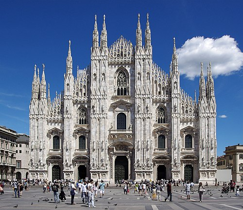
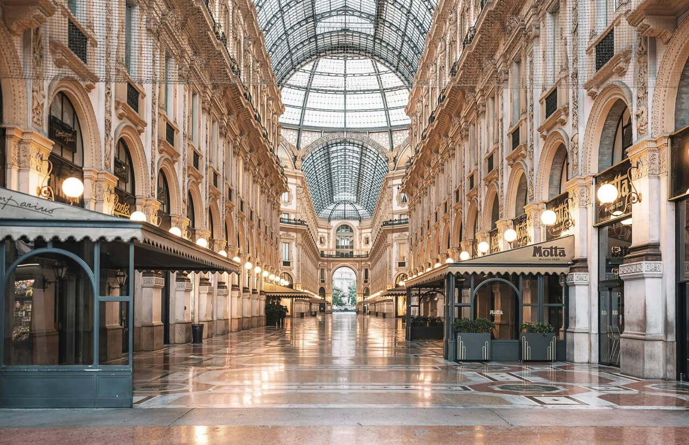

Mediolan (wł. Milano, łac. Mediolanum, lomb. Milan lub Milà) – miasto i gmina w północnych Włoszech, stolica prowincji Mediolan i regionu Lombardia. Położone na północno-zachodnim skraju Niziny Padańskiej pomiędzy rzekami Ticino, Adda, Pad i Alpami. Mediolan położony jest na wysokości 122 m n.p.m. Drugie co do wielkości miasto Włoch – po Rzymie – z liczbą mieszkańców ponad 1 mln 300 tys. Znajdują się tu między innymi: siedem uniwersytetów (Statale, Bicocca, Iulm, Bocconi, Cattolica, Politecnico; założone m.in. w latach 1863, 1920 i 1924) i inne uczelnie, Akademia Literatury, instytuty naukowe oraz liczne instytucje kulturalne, w tym jedna z najbardziej znanych scen operowych – Teatro alla Scala, co czyni miasto jednym ze światowych centrów w tej dziedzinie.

Katedra Narodzin św. Marii w Mediolanie (wł. Duomo St. Maria Nascente di Milano, w dialekcie lombardzkim – Dom de Milan) – gotycka, marmurowa katedra, jedna z najbardziej znanych budowli we Włoszech i w Europie. Należy do największych kościołów na świecie (długość – 157 m, szerokość – 93 m[1]). Również witraże w chórze katedry należą do największych na świecie. Dach katedry, ozdobiony 135[1] sterczynami, rzeźbami i gargulcami, dostępny jest dla turystów (schody lub winda).

Galleria Vittorio Emanuele II – XIX-wieczna galeria handlowa w Mediolanie, uznawana za jeden z najważniejszych zabytków architektury miasta oraz symbol jego rozwoju w okresie zjednoczenia Włoch. Znajduje się w centrum Mediolanu i łączy plac katedralny Piazza del Duomo z Piazza della Scala, tworząc reprezentacyjną oś przestrzenną miasta[1][2][3]. Projekt galerii opracował architekt Giuseppe Mengoni[w innych językach], którego koncepcję wybrano w konkursie urbanistycznym w 1861 roku. Budowę rozpoczęto w połowie lat 60. XIX wieku, a kompleks otwarto w drugiej połowie stulecia; triumfalny łuk od strony placu katedralnego ukończono później, w 1877 roku[1]. Budowla ma plan krzyża i składa się z czteropiętrowych arkad przykrytych konstrukcją z żelaza i szkła. W miejscu przecięcia pasaży znajduje się ośmioboczna przestrzeń przykryta dużą kopułą, stanowiąca centralny punkt całego założenia. Dekoracje galerii – freski, reliefy i rzeźby – przedstawiają m.in. alegorie nauki, sztuki, rolnictwa i przemysłu oraz postacie wybitnych Włochów, co podkreślało jej znaczenie jako symbolu nowoczesnego państwa włoskiego[1]. Od początku funkcjonowania galeria pełniła rolę prestiżowej przestrzeni handlowo-towarzyskiej. Mieszczą się w niej luksusowe sklepy, księgarnie i kawiarnie, a sam obiekt uchodzi za jeden z najważniejszych przykładów monumentalnych pasaży handlowych XIX wieku w Europie[1][3].

La Scala, właśc. Teatro alla Scala – teatr operowy w Mediolanie, jeden z najsłynniejszych na świecie. Gmach teatru zaprojektował w latach 1776–1778 architekt Giuseppe Piermarini. Na podstawie jego planów, w ciągu dwóch lat powstał gmach z klasycystyczną fasadą. W teatrze mieściło się ponad 3000 widzów. Scenę iluminowały 84 lampy olejne, zaś pozostałe części teatru – około tysiąca lamp. Widownia posiadała pięć wieńców lóż, z których każda była inaczej udekorowana. Nazwa „Teatro alla Scala” pochodzi od nazwiska księżnej Beatrycze Reginy della Scala, żony księcia Bernabo Viscontiego, fundatora kościoła Santa Maria alla Scala zbudowanego w XIV wieku, który znajdował się niegdyś na miejscu obecnego gmachu opery. La Scala był piątym wielkim budynkiem operowym wybudowanym w XVIII wieku we Włoszech. Przedstawienie inauguracyjne (opera Salieriego L'Europa riconosciuta) odbyło się 3 sierpnia 1778 roku. Od końca XVIII wieku La Scala odgrywa rolę centrum sztuki operowej o znaczeniu międzynarodowym. Wiele włoskich oper powstało z przeznaczeniem do wykonania na tej scenie, m.in. dzieła operowe takie jak Turek we Włoszech Rossiniego, Norma Belliniego, Lucrezia Borgia Donizettiego, Madame Butterfly i Turandot Pucciniego, Mefistofeles Arrigo Boito czy Nabucco, Otello i Falstaff Giuseppe Verdiego. W latach 2000–2004 przeprowadzono prace renowacyjne pod nadzorem Maria Botty, których koszt wyniósł 61,5 milionów euro. W czasie tych prac wzniesiono wysoką na 38 metrów wieżę sięgającą dodatkowo 16 metrów w głąb, a także dobudówkę w kształcie elipsy. 7 grudnia 2004 roku odbył się wieczór galowy zorganizowany z okazji ponownego otwarcia gmachu. Gala zgromadziła 2 tysiące widzów; ceny biletów sięgały 2 tys. euro. Widownia mieści obecnie 3600 osób.